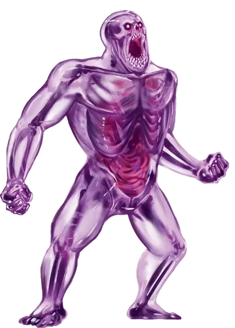

Громила звёздных порождений
Star Spawn Hulk
Большая Аберрация, хаотично-злая

Класс Доспеха 16 (природный доспех)
Хиты 136 (13к10 + 65)
Скорость 30 футов
| мод | спас | ||
|---|---|---|---|
| СИЛ | 20 | +5 | +5 |
| ЛОВ | 8 | −1 | +3 |
| ТЕЛ | 21 | +5 | +5 |
| мод | спас | ||
|---|---|---|---|
| ИНТ | 7 | −2 | −2 |
| МДР | 12 | +1 | +5 |
| ХАР | 9 | −1 | −1 |
Навыки Восприятие +5
Сопротивление урону дробящий, колющий, рубящий от немагических атак
Иммунитет к состояниям очарование, испуг
Чувства тёмное зрение 60 футов, пассивное Восприятие 15
Языки Глубинная речь
Опасность 10 (5900 опыта)
Бонус мастерства +4
Особенности
Психическое отражение. Если Громила получает урона психической энергией, то каждое существо в пределах 10 фт. от него получает этот урон вместо него, в то время как сам громила не получает никакого урона. Кроме того, мысли и местоположение громилы не может быть отслежено магией.
Действия
Мультиатака. Громила совершает две атаки ударом. Если обе атаки поражают одну и ту же цель, она получает дополнительно 9 (2к8) урона психической энергией и должна преуспеть в спасброске Телосложения Сл 17, иначе станет Ошеломлённой до конца своего следующего хода.
Размашистый удар. Рукопашная атака оружием: +9 к попаданию, досягаемость 10 фт., одна цель. Попадание: 14 (2к8 + 5) дробящего урона.
Серия одиночных ударов (перезарядка 5-6). Громила совершает одиночную атаку Ударом по каждому существу в пределах 10 фт. от себя. Каждое существо, поражённое такой атакой должно преуспеть в спасброске Ловкости Сл 17, иначе будет сбито с ног.
Описание
Материальный план представляет только небольшой кусочек мультивселенной. За пределами хорошо изученных планов существования лежат измерения, что смертельно опасны для смертных. Некоторые настолько враждебны, что даже мгновенного контакта с таким местом достаточно, чтобы свести смертного с ума. Но есть существа, для которых подобные измерения являются родными: существа, что вечно голодают, ищут, завывают, а иногда ещё и видят сновидения. Эти Древние старше всех прочих смертных рас и всегда внушают ужас разумным гуманоидам.
Однако каким сильным не было желание вторгнуться и захватить Материальный План, Древние не могут или не хотят покидать свои измерения. Одни заточены в своих измерениях внешними силами, некоторые неразрывно связаны со своими домашними реальностями, а другие просто не могут найти даже подобие выхода из собственного измерения.
Предвестники рока. Существа известные как порождения звёзд – это предвестники, рядовые солдаты, или лейтенанты Древних, способные принимать форму гуманоида, что может путешествовать по Материальному Плану. Чаще всего они пребывает следом за кометой...или, возможно, этот феномен предупреждает о том, что поблизости есть порождение звёзд, и оно доступно для общения. Если знамения верны, то колдуны и культисты спешат собраться вместе, читают вслух пренебрежительные слова и проводят безумные ритуалы, что направляют на верный путь пылающее порождение звёзд в этот мир.
Громила звёздных порождений. Громила является самым большим из известных звёздных порождений. Хоть его размеры и сопоставимы с размерами огра, в полупрозрачной, блестящей кожной ткани громилы виднеются мускулистые формы, лишённые огрового жира. Бледные и, лишённые век, глаза злобно смотрят с лица, искажённого слишком большим количеством зубов и едва заметным носом.
Громилы редко встречаются без командующих ими провидцев, обладая лишь одним единственным желанием – защищать своего хозяина.